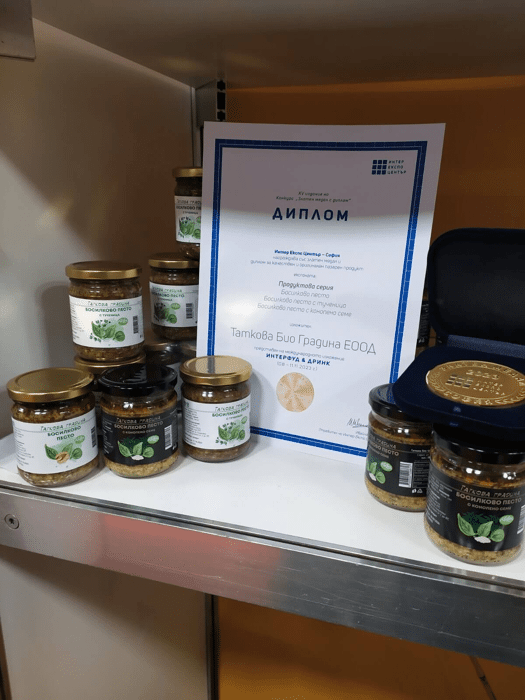
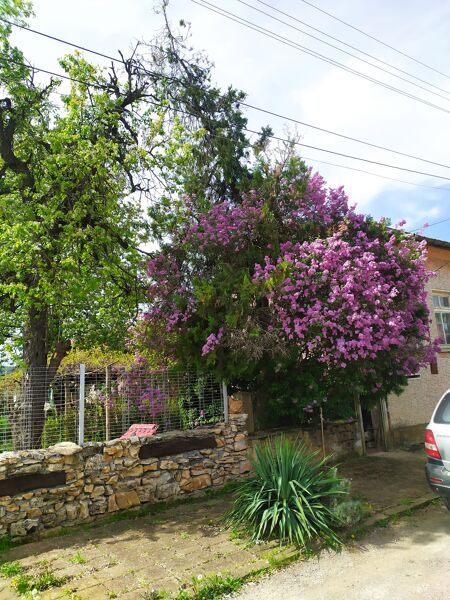
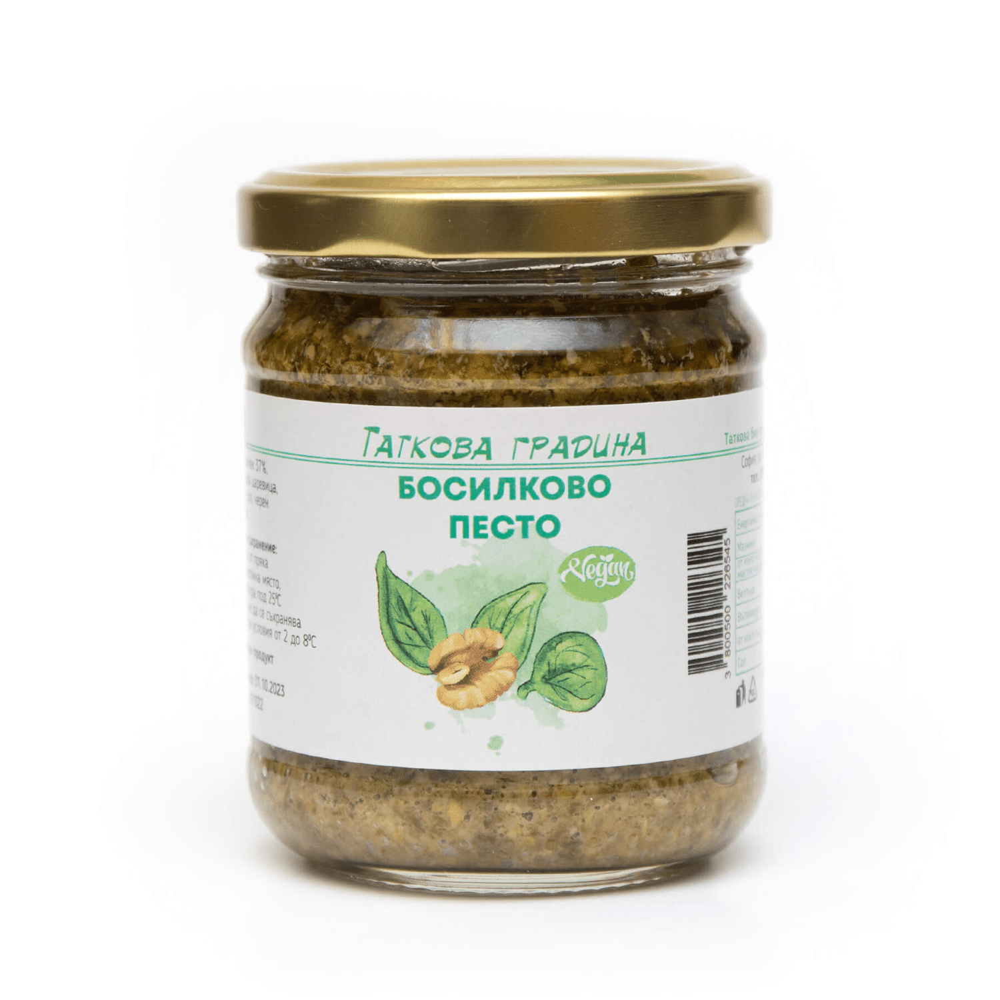
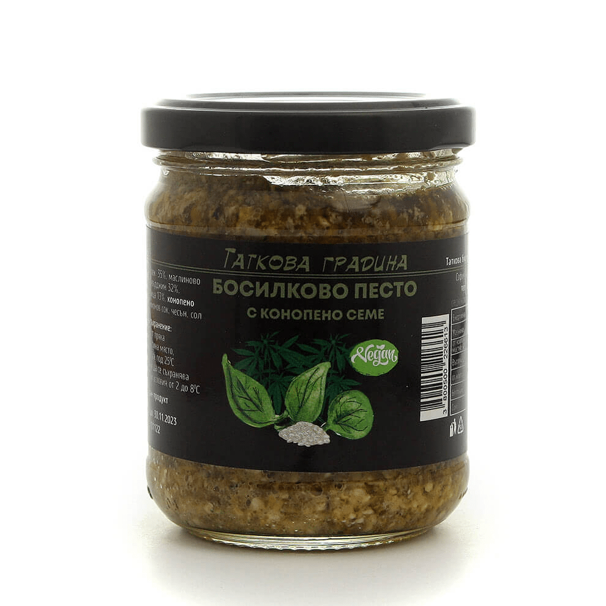
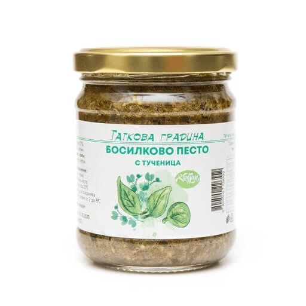
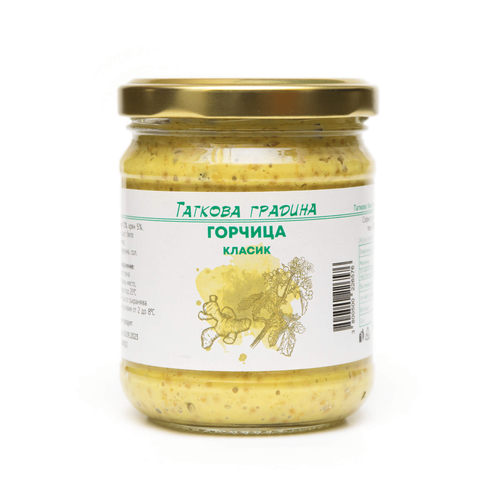
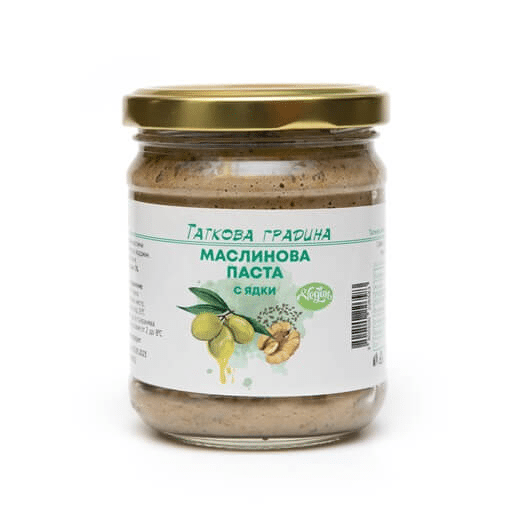
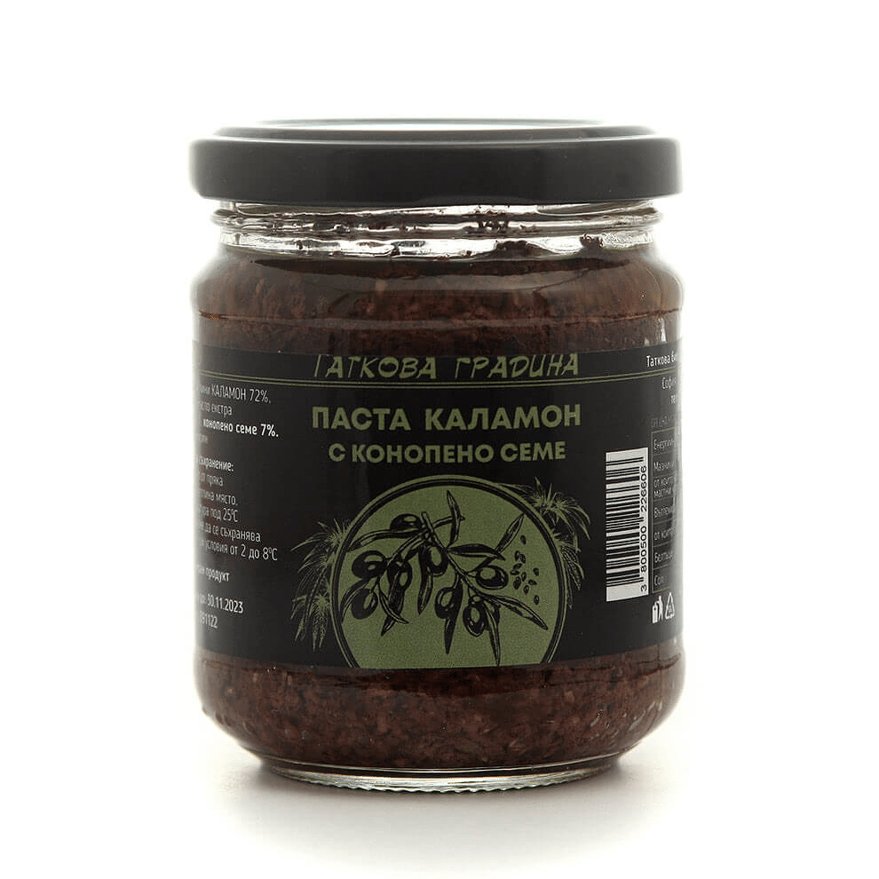
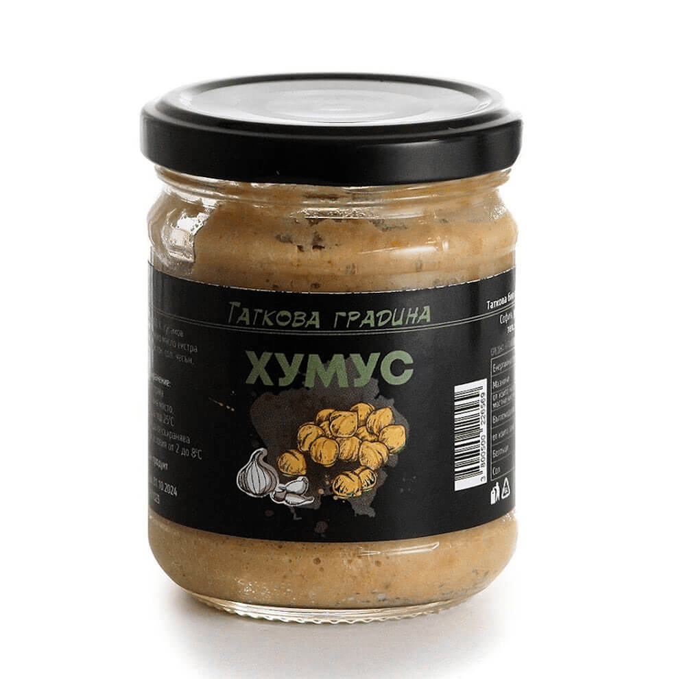
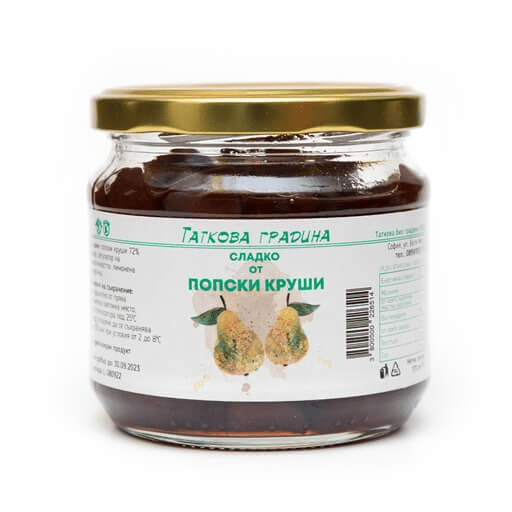

BG

For us the biologically cultivation of fruits and vegetables is a way of thinking, conviction and attitude towards the world that is surrounding us. That's why around our "summer office" is colorful, fragrantly and sonorously, moreover on the table for all the guests that are visiting us, there is always yellow, green and pink tomatoes, eggs with white, green and red shells, delightful tea with mint, lemon balm and sage. It is even more wonderful to pick up with your hands fresh herbs, cucumbers, tomatoes, raspberries, grapes, goji berry, цaucasian persimmon, jujube or just to pick up the basket and collect the eggs from the polos.
We are grateful that the fate, although the hard way, brought us back to our roots and made us realize that we have wealth full of knowledge, capability and ability to think which we could give away.
We built our business through combining the professional knowledge of a biologist and marketing specialist, sweet and salty products with persistency and high quality, which are accessible for everyone at anytime and everywhere.
Food is life and health begins with clean food.
Welcome to the world of Tatkova gradina and visit us again.


Tatkova Gradina
Food is life and health begins with clean food.About us
We are "Tatkova gradina" or Marin and Pepa Petrovi, small family business with a farm in central Bulgaria and a workshop in Sofia.For us the biologically cultivation of fruits and vegetables is a way of thinking, conviction and attitude towards the world that is surrounding us. That's why around our "summer office" is colorful, fragrantly and sonorously, moreover on the table for all the guests that are visiting us, there is always yellow, green and pink tomatoes, eggs with white, green and red shells, delightful tea with mint, lemon balm and sage. It is even more wonderful to pick up with your hands fresh herbs, cucumbers, tomatoes, raspberries, grapes, goji berry, цaucasian persimmon, jujube or just to pick up the basket and collect the eggs from the polos.
We are grateful that the fate, although the hard way, brought us back to our roots and made us realize that we have wealth full of knowledge, capability and ability to think which we could give away.
We built our business through combining the professional knowledge of a biologist and marketing specialist, sweet and salty products with persistency and high quality, which are accessible for everyone at anytime and everywhere.
Food is life and health begins with clean food.
Welcome to the world of Tatkova gradina and visit us again.
Our Products
Basil Pesto
Description: A product with a rich aroma and taste. The basil is served with medium aromas of olive oil, walnuts and garlic. Suitable for direct feeding or to sauces for pasta, pizza, salads. A classic but very different own recipe with locally sourced ingredients. Sterilized product. Without preservatives.


Basil pesto with hemp seed
Description: A product with a rich aroma and taste. The basil is served with the complementary aromas of olive oil and garlic. Hemp seed supplements the body's needs for proteins and saturated fatty acids. Product suitable for direct consumption or added to sauces for pasta, pizza, salads. Sterilized product. Without preservatives.Basil pesto with pursley
Description: A product combining the benefits of two herbs - basil and purslane, served in a modern form and suitable for any table. Purslane supplements the entire range of "B" vitamins, Omega 3 fatty acids and vitamin C in our body. Also contains olive oil, walnuts and garlic. Suitable for direct consumption, for pasta, pizza and salads. Own recipe with locally sourced ingredients. Sterilized product. Contains no preservatives.


Mustard Classic
Description: Product suitable for dressings, as an addition to meat, salads, sandwiches. Contains natural antiseptics important for the body - mustard, horseradish, honey. The classic yellow color for mustard is due to added turmeric, which complements the qualities of the product with its antioxidant properties. Sterilized product. Store in a place protected from light.Olive paste with nuts
Description: The olive paste has a soft and pleasant aroma of green olives, with a dense structure, achieved by the complex of raw nuts - walnut and sunflower. The added sesame tahini adds to the richness of the flavor. Suitable for direct consumption. Sterilized product. Contains no preservatives.


Calamon paste with hemp seed
Description: CALAMON olive with a fine and balanced taste, with a delicate aroma of oregano and rosemary. The added hemp seed complements the richness and softness of the flavor. Supplements the body's daily needs with proteins and saturated fatty acids. Suitable for direct consumption. Sterilized product. Contains no preservatives.Hummus
Description: Nutritious and very tasty Hummus is a well-known food and classic taste. Our recipe is chickpeas with sesame tahini, cumin, garlic and a subtle aroma of oregano. Sterilized product. Contains no preservatives.

